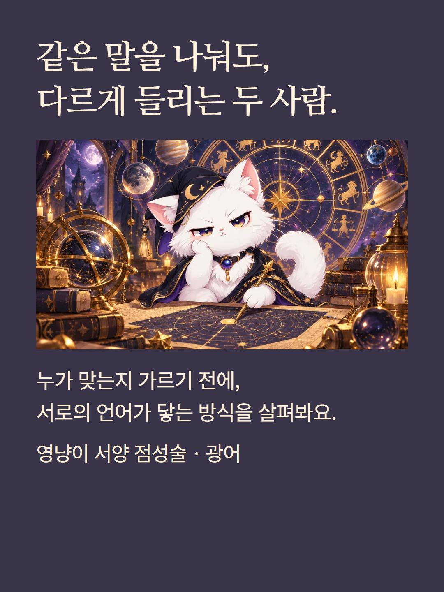
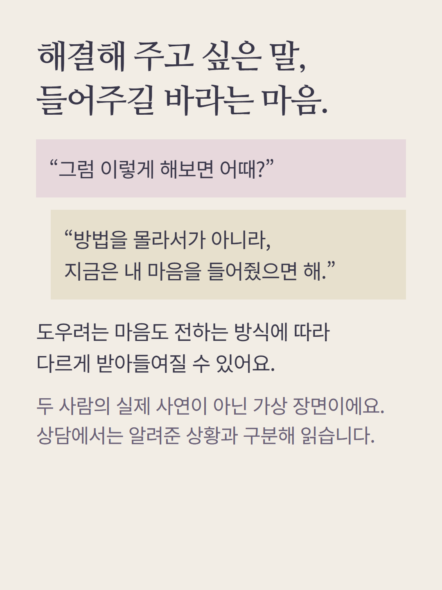
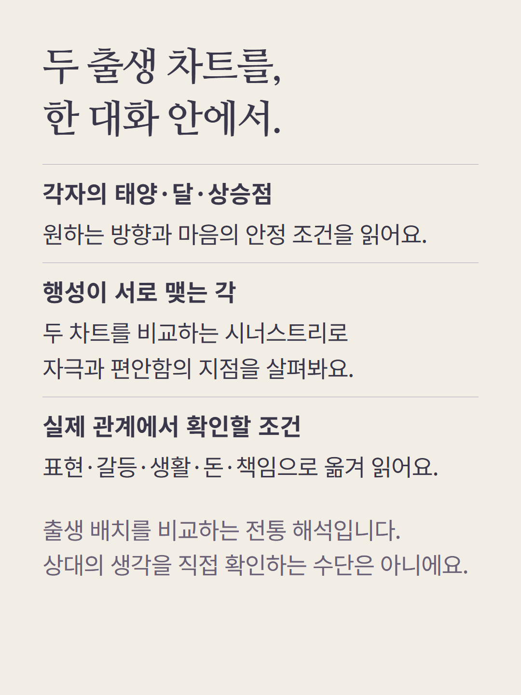
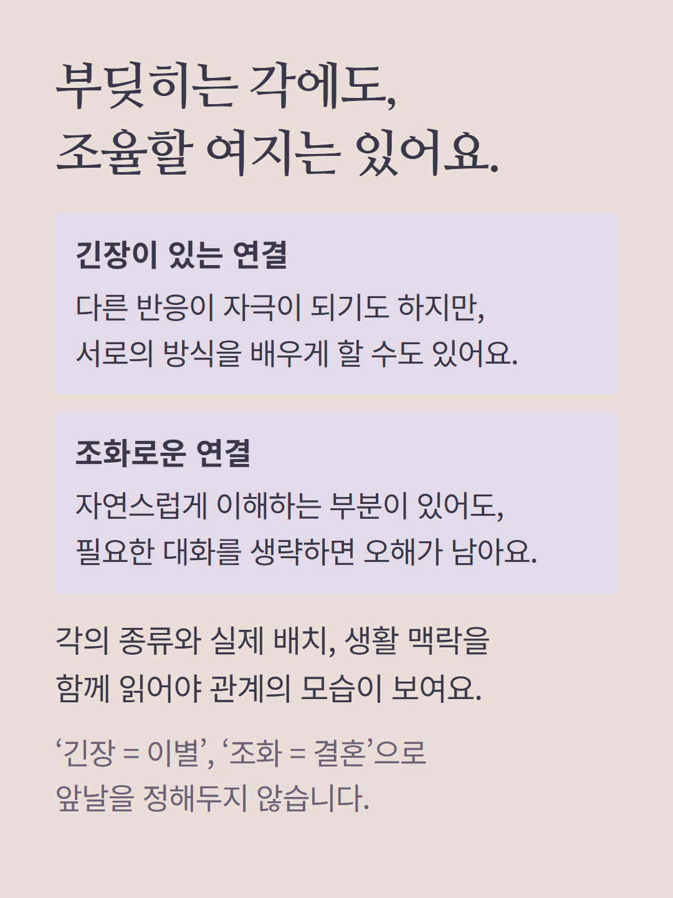
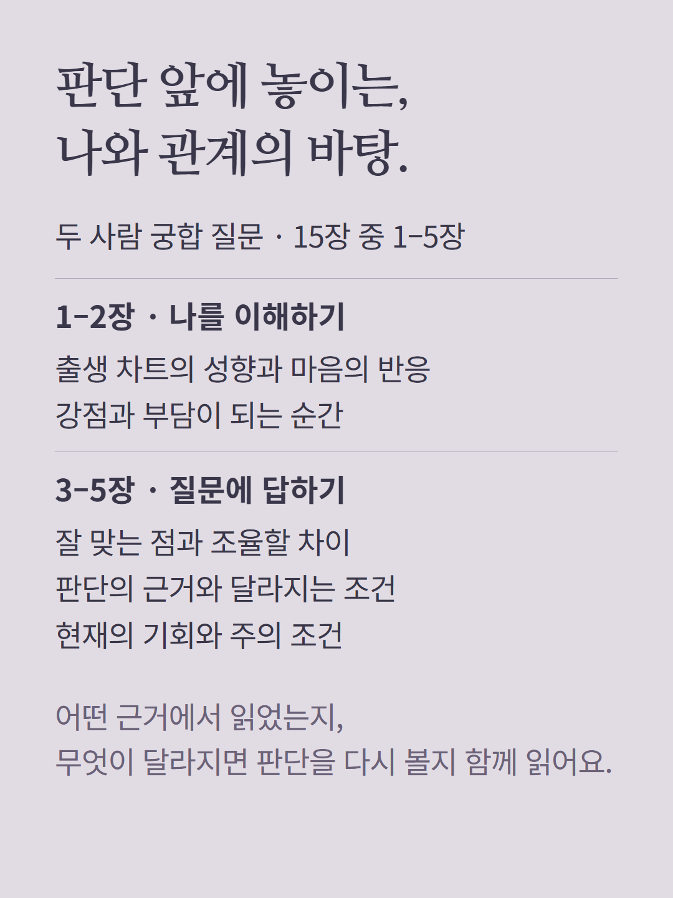
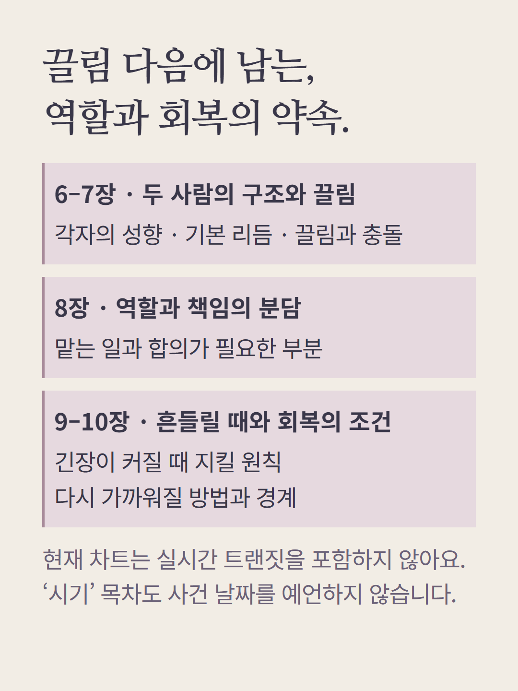
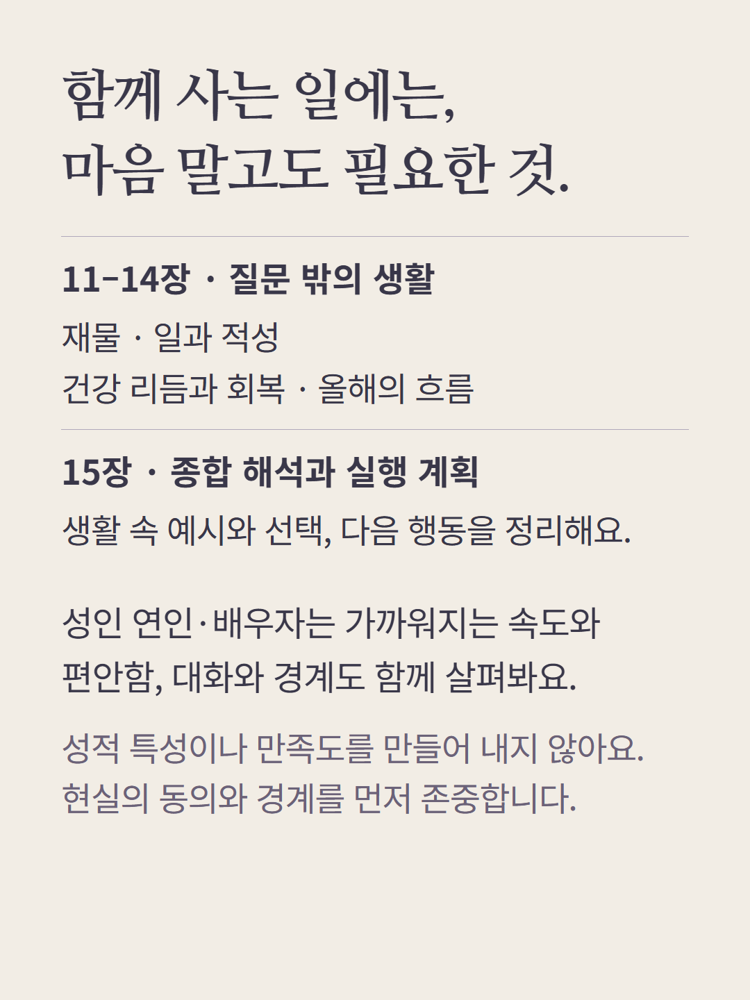
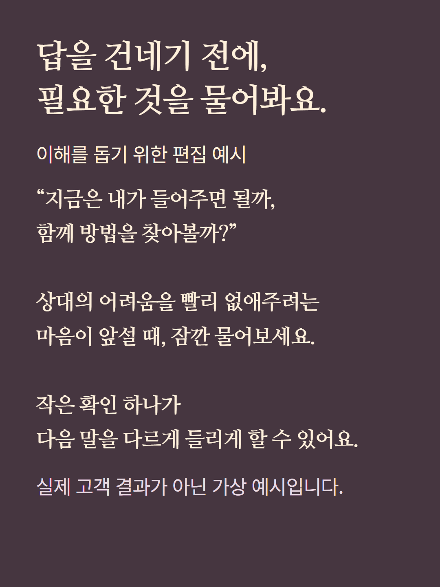
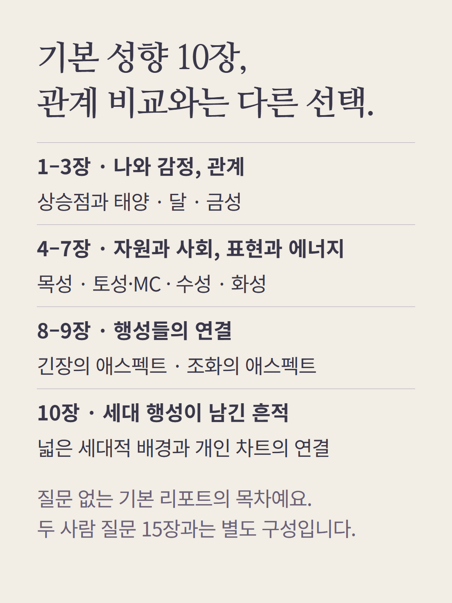
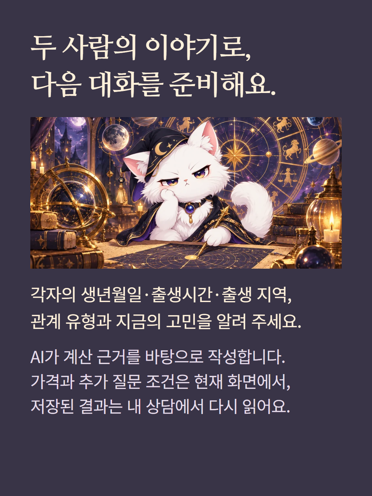

서양 점성술 광어의 질문 상담은 두 사람의 출생 차트와 시너스트리 비교를 바탕으로 관계의 차이와 합의를 읽습니다. 두 사람 궁합 질문은 15장, 질문 없이 읽는 기본 성향 리포트는 10장으로 다릅니다. 별도 레거시 궁합 등 종류는 해당 화면에서 목차를 확인해 주세요. 두 사람의 출생시간·지역·시간대가 필요합니다. 긴장각을 이별, 조화각을 결혼 보장으로 단정하지 않으며 상대의 실제 속마음과 사건 날짜는 알 수 없습니다. 현재 실시간 트랜짓은 포함되지 않습니다. 성인 연인·배우자의 친밀감은 편안함·속도·대화·경계로 다룹니다. 예시는 가상 편집이고 AI 작성 상담입니다. 가격과 추가 질문 조건은 기존 화면을 따릅니다.